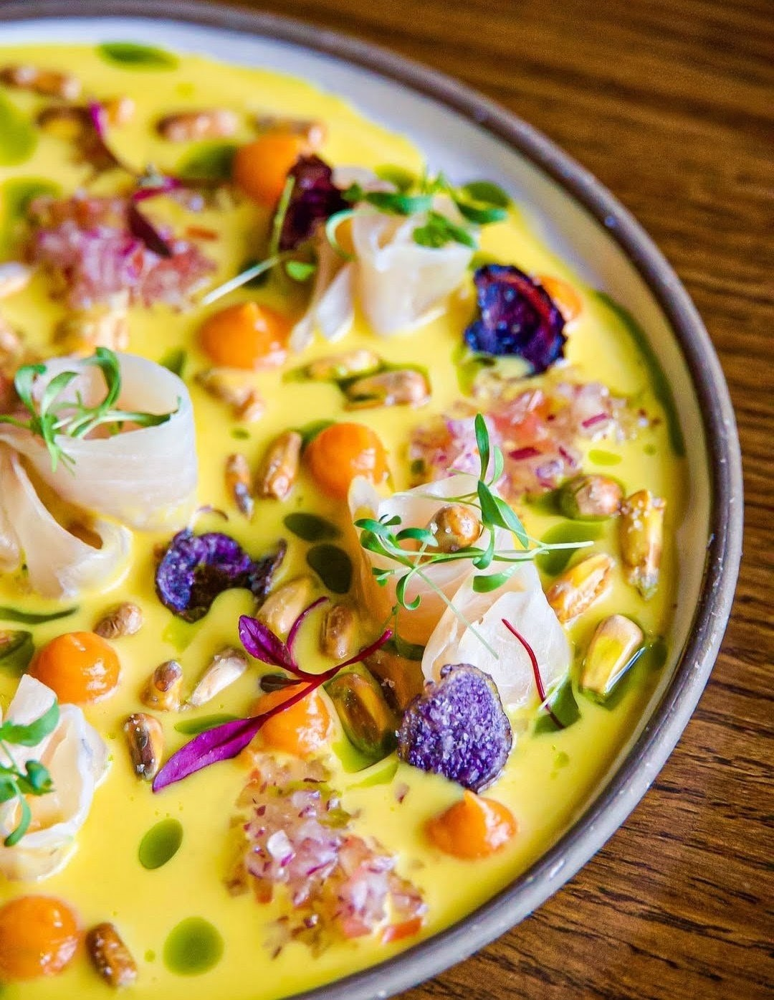

Wilf & Ada's
There's no sign out front worth remembering — just a line of regulars who already know. The kitchen turns out honest, from-scratch plates all day, and the duck Benedict alone justifies the wait.
Visit Facebook →
Twelve tables worth knowing about, from the city's most ambitious tasting menus to the neighbourhood spots locals actually eat at every week.
There's no sign out front worth remembering — just a line of regulars who already know. The kitchen turns out honest, from-scratch plates all day, and the duck Benedict alone justifies the wait.
Visit Facebook →Sixteen seats, a kitchen built around fermentation and patience, and a menu that shifts with whatever's been curing or pickling that week. This is where Ottawa's dining conversation is currently pointed.
Visit website →Loud, colourful, and unapologetically fun — this Mexican staple has been feeding the city since 2004. Load up at the salsa bar, order the tacos, and don't overthink it.
Visit website →The kitchen here doesn't chase trends — it builds a menu around what's actually good right now and lets the technique speak for itself. A steady hand in a scene that can sometimes overreach.
Visit website →A tiny Hintonburg storefront turning out some of the best pies in the city — organic flour, a proper natural wine list, and a neighbourhood feel that makes it easy to become a regular.
Visit website →The kind of Elgin Street room you end up staying in far longer than planned — good wine, a menu made for sharing, and a French sensibility that never feels stuffy.
Visit website →Half fish market, half dining room — and the freshness shows. Four decades in, it's still the spot most locals point to first when someone asks where to get seafood in this city.
Visit website →There's no menu handed to you here — just a chef's evolving vision, course after course, from a two-time Canadian Culinary Championship winner. Nothing else in the city quite compares.
Visit website →Come for the raw bar, stay for the pasta — everything here is made in-house, from the fresh sheets rolled daily to the oysters shucked to order.
Visit website →Downtown's answer to Peruvian cooking done properly — bright, punchy, citrus-forward dishes in a warm room that fills up fast on weekends.
Visit website →Set inside a converted mid-century bank in Westboro, this is a room built for slow dinners — thoughtful, locally-driven plates and a wine list worth taking your time with.
Visit website →A short trip from downtown but a world away in feel — an unpretentious neighbourhood spot with a genuine handle on seafood and none of the fuss.
Visit website →